项目背景
人工调研需要在搜索、笔记、文档和图表之间频繁切换，资料分散、证据难追踪、阶段结果难复用。NewsLens 将搜集、整理、分析与报告生成连接成一条持续推进的研究链。
NewsLens
面向内容创作者的可规划、可追踪、可输出智能研究台
Code & READMEIndependent Developer · Deep Research Project
少在信息流里来回切换，多把时间用在判断与表达。
From scattered information to structured insight.
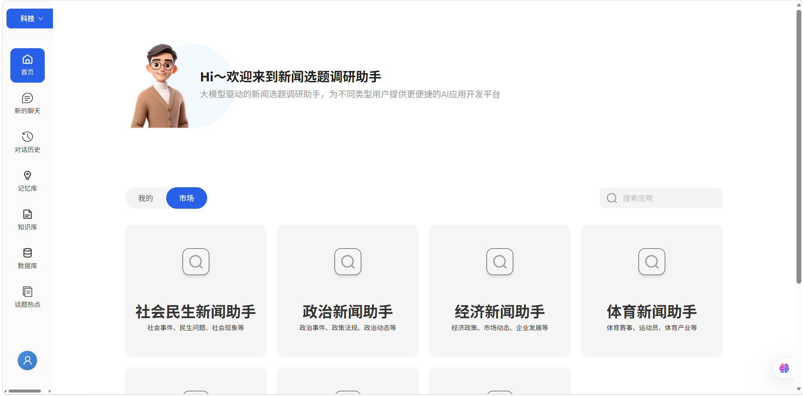
NewsLens Workbench. 从多领域选题入口开始，把热点、资料、推理过程与研究产物收拢在同一个工作台中。
新闻选题调研助手是为自媒体选题和内容创作场景设计的智能研究项目。做热点解读、行业观察或人物故事时，最耗时的通常不是写作本身，而是前期找资料、理脉络和判断题目是否值得继续。NewsLens 希望把这部分重复工作收拢起来，让选题调研更快进入状态。
它的核心不是单纯“帮你搜答案”，而是把一个题目拆成可继续追踪的研究过程。输入议题后，系统自动整理检索结果、提取关键信息、生成知识图谱与可视化分析，再输出一版可继续加工的调研报告。同时，热点采集和个人知识库让外部信息流与已有资料在同一工作流中被重新利用。
围绕“从想到一个题，到把资料摸清楚”这一步，构建面向内容创作者的完整选题研究流程。
人工调研需要在搜索、笔记、文档和图表之间频繁切换，资料分散、证据难追踪、阶段结果难复用。NewsLens 将搜集、整理、分析与报告生成连接成一条持续推进的研究链。
它不追求大而全，更像内容创作者自己的“选题研究台”：服务那些需要先做功课、再下笔的题目，重点解决前期资料摸排与议题理解。
热点事件快速研判
专题报道前期资料梳理
行业长期议题跟踪
复杂公共事件脉络分析
数据驱动型报道辅助写作
个人资料库整理与二次调用
八项核心能力覆盖选题发现、资料进入、推理分析和报告交付。
平台按照社会民生、政治、经济、体育、文化、娱乐、科技等新闻方向分类，帮助用户快速进入目标赛道。
支持“深度搜索（网络）”和“本地知识库”两种来源，可按场景切换或组合，让外部信息增量与个人资料积累进入同一研究过程。
自动汇总当前值得关注的事件和话题线索，减少反复刷平台、手动记选题的时间，形成每日选题池与长期观察清单。
上传过往文档、报道素材、行业笔记或阶段性研究内容，完成解析后纳入后续检索与分析，让已有积累能够在新选题中被重新调用。
以 ReAct 风格展示研究计划、思考、行动与观察，让用户不仅看到结果，也能理解研究如何展开。
围绕议题中的事件、政策、企业与人物自动构建知识图谱，帮助识别关联网络与传播链路。
生成趋势图、对比图等可视化结果，直观呈现传播热度、事件变化与风险分布，为新闻判断提供数据支撑。
在完成检索与分析后输出结构化报告，覆盖热点分析、传播趋势、议题分化、补充检索与内容修订，形成可继续加工的稿件基础。
从领域选择、热点采集到双模式搜索，建立研究的第一批线索与材料。
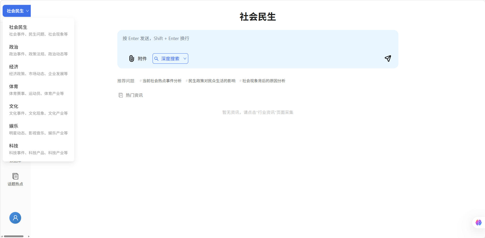
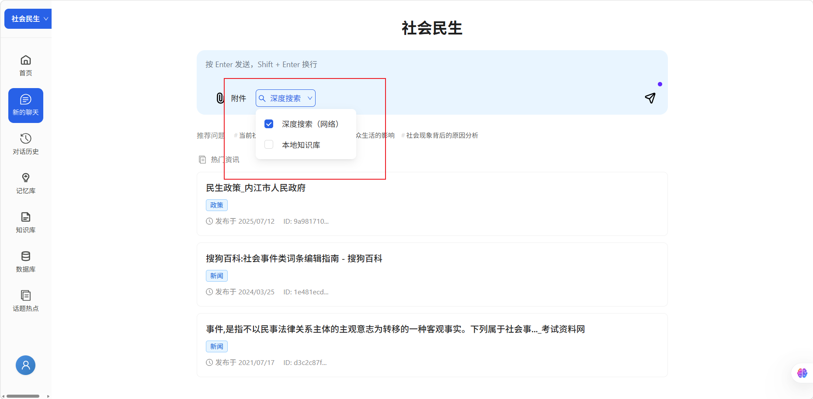
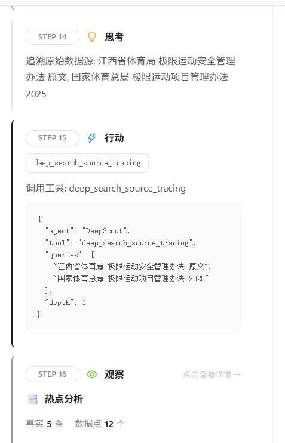
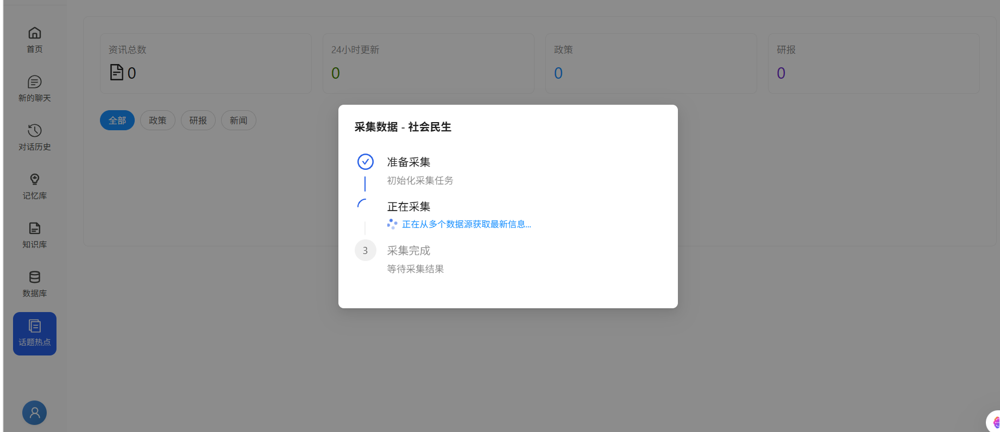
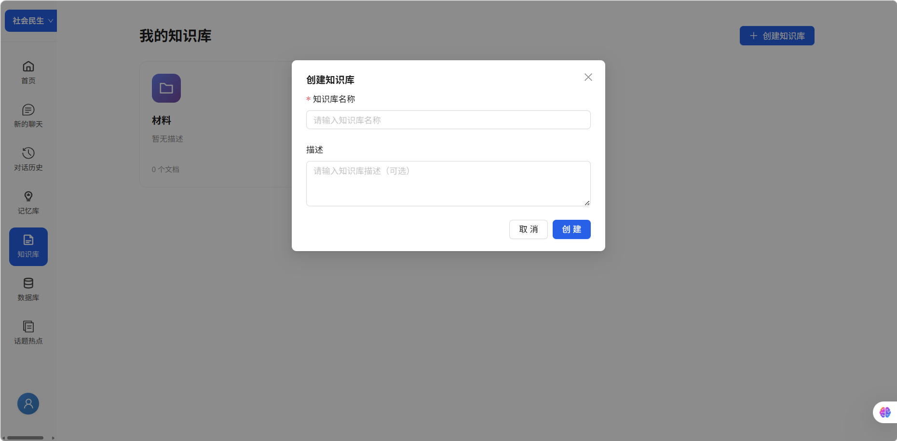
系统将研究计划、思考、行动和观察持续呈现在左侧时间线，并在右侧累积结构化产物。
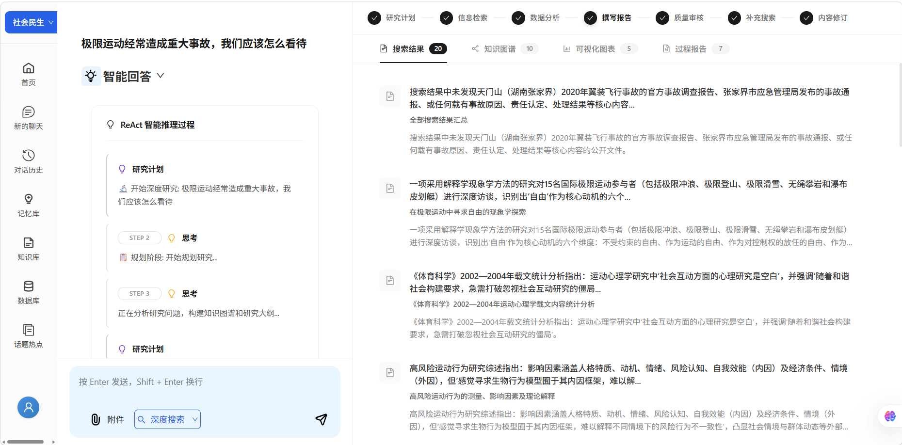
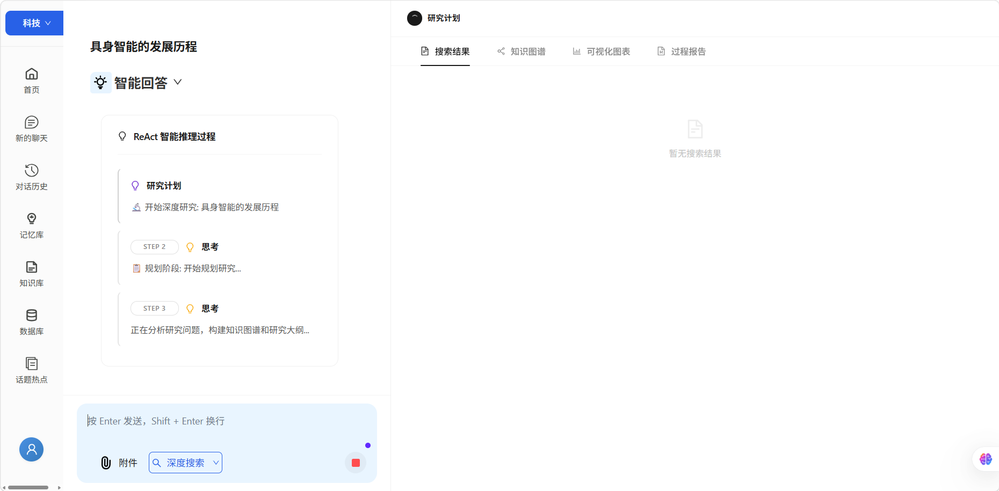
LangGraph 将规划、检索、分析、建模、审校与写作组织成可循环的状态图。
规划研究问题，生成可执行大纲与研究假设。
并行检索网络与本地资料，持续补齐证据。
提取数据、识别趋势并组织结构化发现。
执行受控分析代码，生成图表与关系模型。
对抗式检查结论、证据覆盖与引用质量。
整合阶段结果，撰写并修订最终报告。
把检索材料进一步转成关系网络、可视化洞察与可继续加工的最终报告。
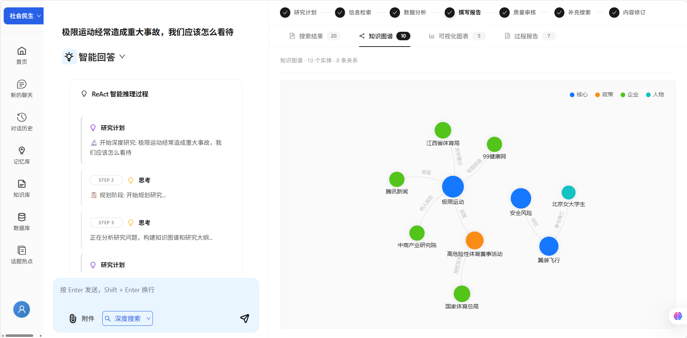
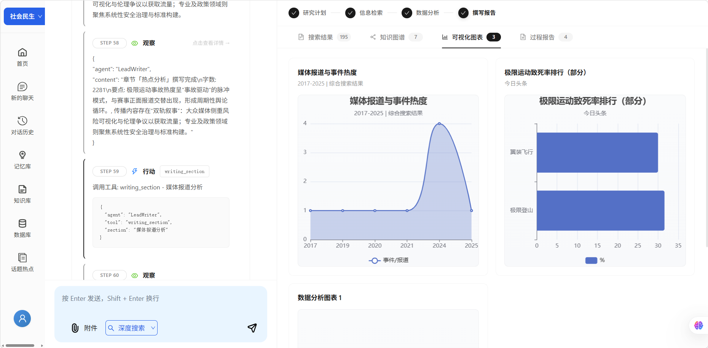
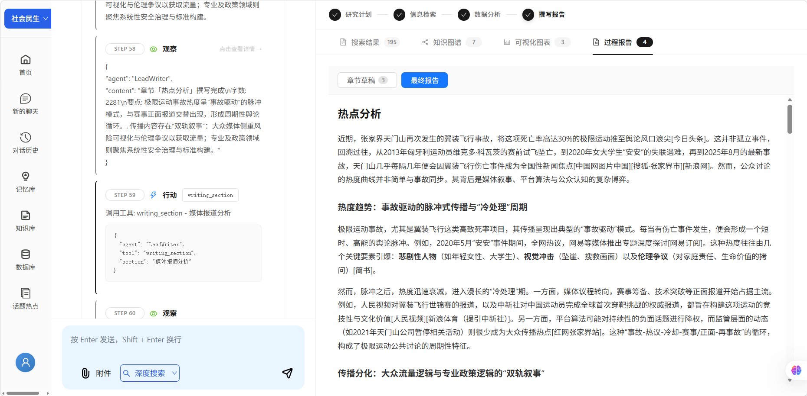
围绕新闻研究的真实工作方式，形成从选题到修订的八步闭环。
通过热点采集或手动输入确定选题方向
按需上传个人资料，补充自己的知识库内容
系统生成研究计划，拆解问题
自动进行信息检索与资料汇总
构建知识图谱，梳理关键实体关系
输出可视化图表，辅助洞察判断
生成阶段性结果与最终调研报告
支持后续补充检索、审校与内容修订
网络结果与本地知识库统一切片，使用 Milvus 向量召回与 Rerank 两阶段检索，兼顾信息增量与个人积累。
统一记录标题、正文、URL、发布日期与相关性，将结论、证据片段和原始信源组织为可追溯引用链。
SSE 持续回传研究状态；检查点、JSON 容错解析与阶段保存保证长流程可观察、可恢复。
对于新闻生产流程，NewsLens 的价值不仅是“更快找到资料”，更是“更系统地理解问题”。它减少重复检索与低效整理，让创作者与编辑把更多时间投入判断观点、采访、写作和编辑决策。
提升选题研判速度，缩短前期准备时间
加强资料整理的结构化与可追溯性
让复杂议题分析更直观、更完整
为深度报道、专题策划提供稳定支撑
推动新闻生产向智能化、协同化升级
NewsLens 是一套面向内容生产场景的智能研究系统。它将大模型能力与新闻业务流程结合，让选题研究不再停留在“搜一搜、看一看”的浅层阶段，而是升级为可规划、可分析、可追踪、可输出的完整工作流。